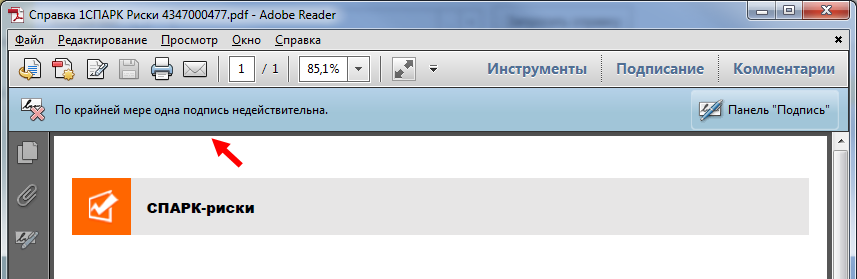
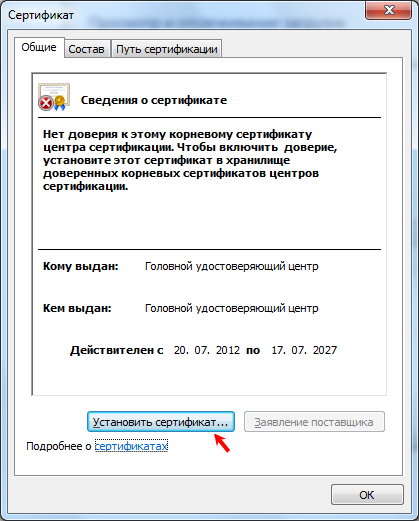
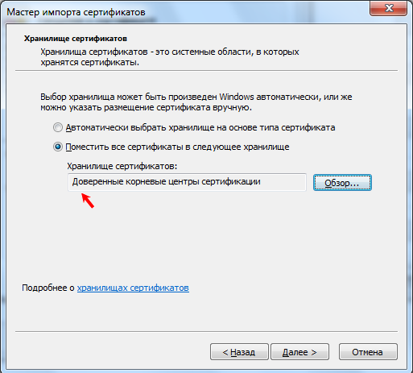
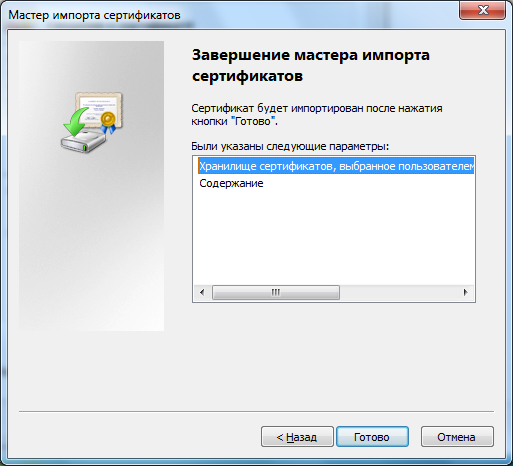
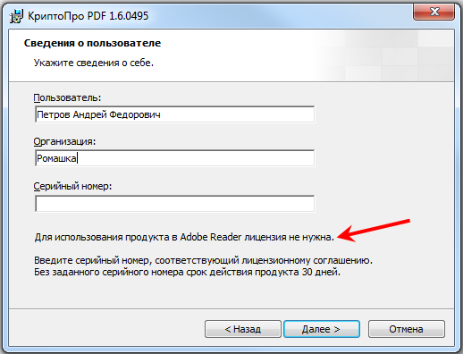
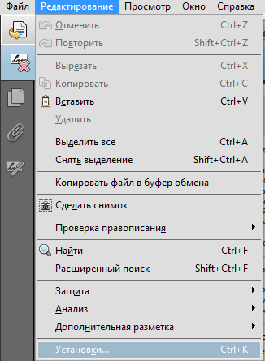
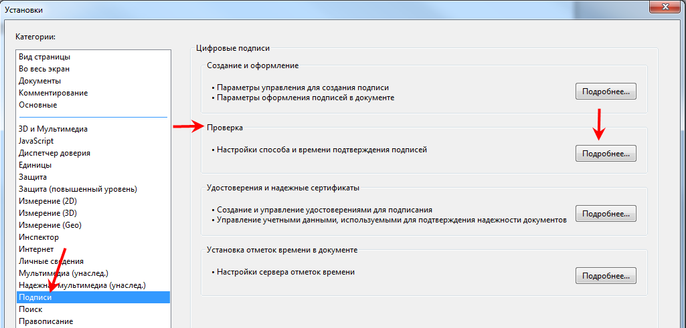
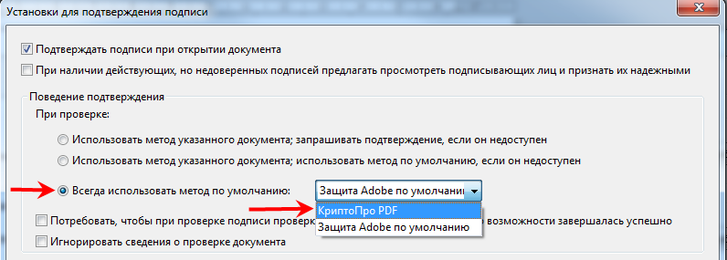
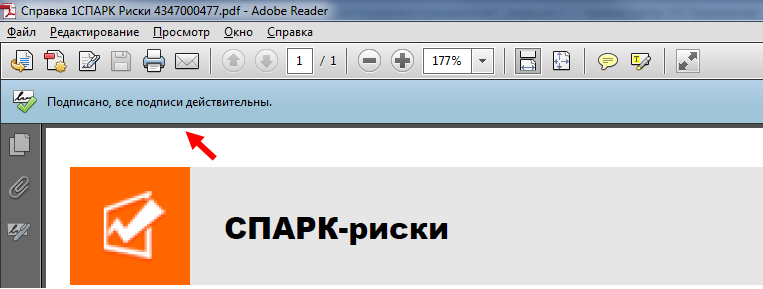
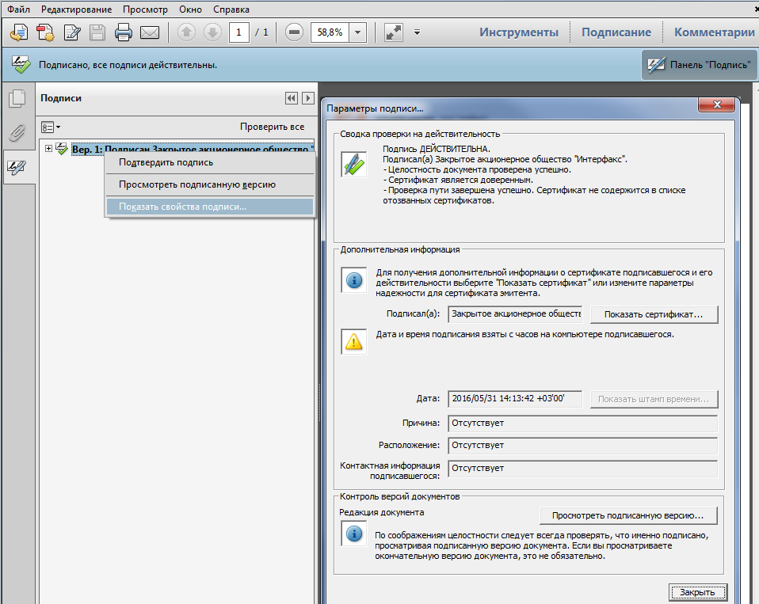

Set up Adobe Reader to check the digital signature
If the Adobe Reader is not set up properly when opening the 1SPARK Risks certificate file, the panel will appear, indicating that the signature is invalid:

Adobe Reader configuration possibility depends on which cryptographic service provider is installed on your computer.
When using ViPNet cryptographic service provider CSP
For ViPNet CSP cryptographic service provider users, electronic signature verification using Adobe Reader is not available, but despite this, the signature is legally valid.
When using CryptoPro cryptographic service provider CSP
To check the digital signature of the 1SPARK Risks certificate, you should:
Installation of certificates of certifying centers
Download the certificate of the principal certifying center at the link: https://e-trust.gosuslugi.ru/Shared/DownloadCert?thumbprint=8CAE88BBFD404A7A53630864F9033606E1DC45E2.
Open the file of the certificate, press Install:

Choose the storage of certificates "Trusted root Centers of certification" in the open window, press Next>:

At the last step, familiarize yourself with the information about the certificate and press Ready:

In the same manner download and install certificates:
Installation of the plugin CryptoPro PDF
Download the plugin CryptoPro PDF from the website https://www.cryptopro.ru/products/other/pdf and install it in the system.
Note: purchasing a license and entering the serial number is not required to use CryptoPro PDF in Adobe Reader.

Electronic signature verification is configured in “Preferences...” menu item in Adobe Reader:

Click the "More ..." button in the "Signatures" - "Verification" section.

In the window that opens, in the “Verification Behavior” section, set the radio to “Always use the default method” and select “CryptoPRO PDF” in the drop-down list:

Open the extract file again after saving the settings. After re-opening, the signature verification panel will display a positive verification result:

See more details about the signature on the panel "Signature":
